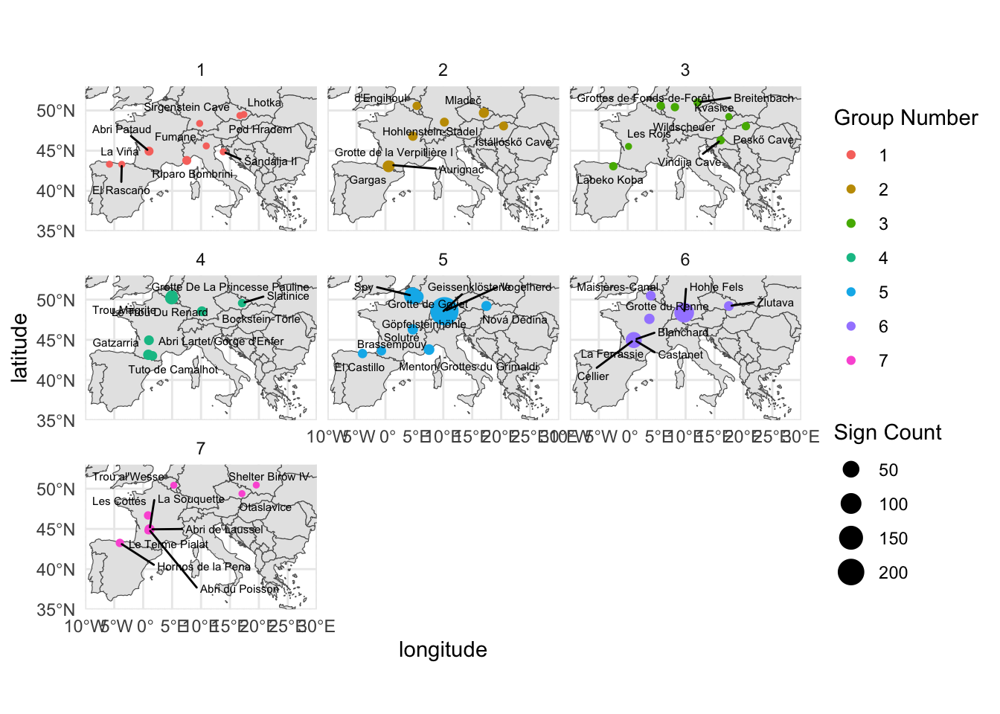
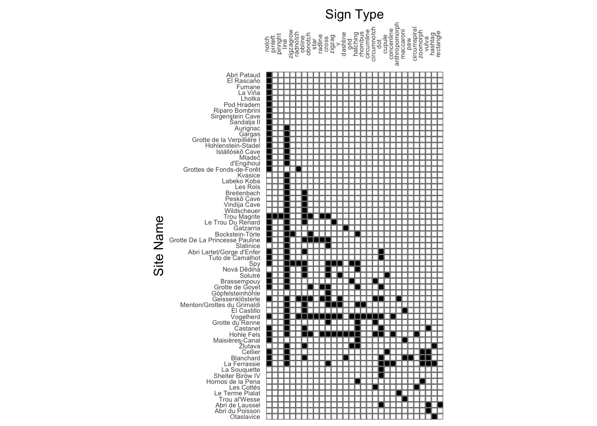
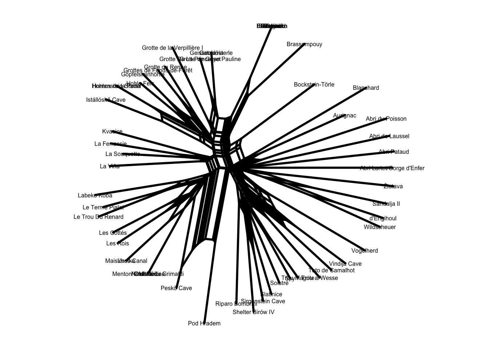
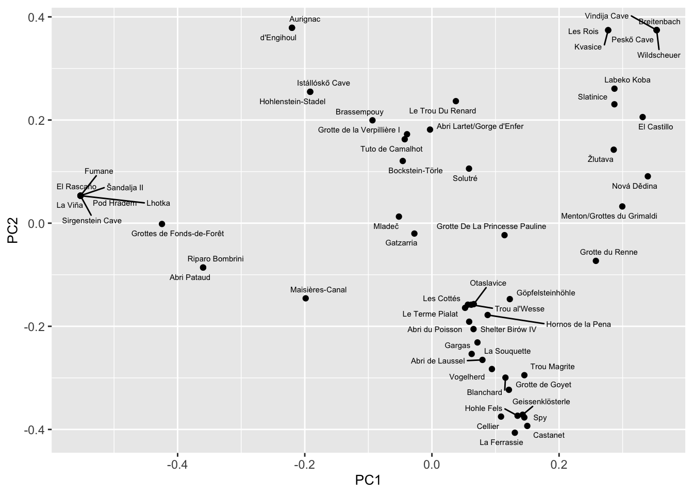
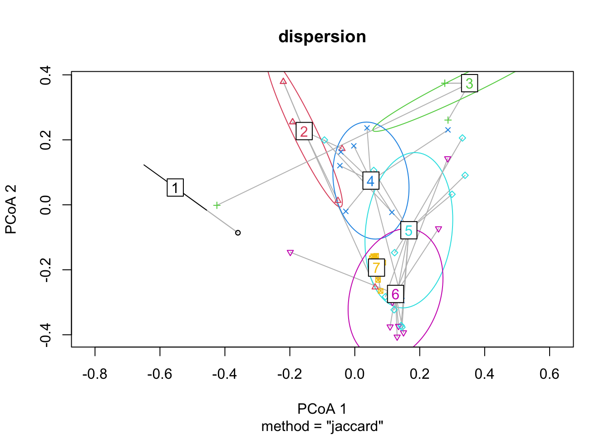
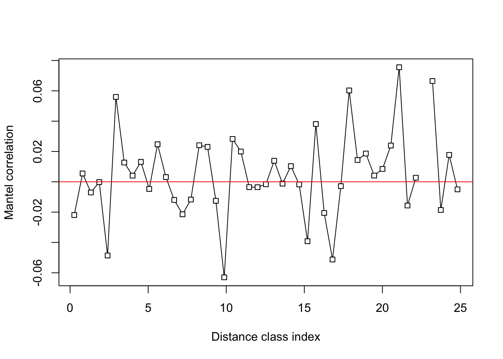

##data
library(tidyverse)
library(magrittr)
library(rcarbon)
signbase_full <- read_csv("signBase_Version1.0.csv")
nsites <- signbase_full %>%
pull(site_name ) %>%
unique() %>%
length()
nartifacts <- nrow(signbase_full)
ncountries <- signbase_full %>%
pull(country) %>%
unique() %>%
length()
nsigntypes <- ncol(signbase_full %>%
select(line:other))
signbase_full_clean <- signbase_full %>%
filter(site_name != "Willendorf",
site_name != "Riparo di Fontana Nuova",
site_name != "Muralovka",
site_name != "Shanidar Cave",
site_name != "Hayonim Cave",
site_name != "El Salitre") %>%
select(-other)
nsites_clean <- signbase_full_clean%>%
pull(site_name ) %>%
unique() %>%
length()
nartifacts_clean <- nrow(signbase_full_clean)
ncountries_clean <- signbase_full_clean %>%
pull(country) %>%
unique() %>%
length()
nsigntypes_clean <- nsigntypes - 1
signbase_years <- signbase_full_clean %>%
drop_na(date_bp_max_min) %>%
mutate(date_bp_max_min = str_replace_all(date_bp_max_min, "\\+\\/\\-", "±")) %>%
mutate(date_bp_max_min = str_replace_all(date_bp_max_min, "\\+", "±")) %>%
separate(date_bp_max_min,
sep = " - ",
c("date_bp_max", "date_bp_min"),
remove = FALSE) %>%
mutate(date_bp_max = ifelse(str_detect(date_bp_max, "\\/"),
str_extract(date_bp_max, ".*?(?=\\/)"),
date_bp_max)) %>%
mutate(date_bp_min = ifelse(str_detect(date_bp_min, "\\/"),
str_extract(date_bp_min, ".*?(?=\\/)"),
date_bp_min)) %>%
separate(date_bp_max,
sep = "±",
c("date_bp_max_age",
"date_bp_max_error")) %>%
separate(date_bp_min,
sep = "±",
c("date_bp_min_age",
"date_bp_min_error")) %>%
drop_na(date_bp_max_age,
date_bp_max_error) %>%
mutate(date_bp_max_age = parse_number(date_bp_max_age),
date_bp_max_error = parse_number(date_bp_max_error))
signbase_years_cal <-
rcarbon::calibrate(signbase_years$date_bp_max_age,
signbase_years$date_bp_max_error,
verbose = FALSE) %>%
summary() %>%
data_frame()
date_min <- signbase_years_cal %>%
pull(MedianBP) %>%
min()
date_max <- signbase_years_cal %>%
pull(MedianBP) %>%
max()
date_range <- date_max - date_minPreliminary Report
Intro
Signbase, an open-access database collection of geometric signs on mobile objects from Paleolithic-era Europe, was launched in 2020, with the explicit goal being to enable quantitative analyses of abstract geographical representation (Dutkiewicz, et al., 2020). The creators of the database identified around 30 distinct geometric sign types, and recorded their occurances on mobile artefacts from the Paleolithic. In this paper, we will analyze the data from Signbase to see if we can find evidence of patterns indicating distinct cultural groups. (Dutkiewicz et al. 2020)
Background
Our understanding of the patterns of cultural and genetic diversity among the hominids of the Upper Paleolithic remains incomplete. The evidence-by-isolation framework proposes that similarity in cultural features will be primarily determined by geographical distance. Assuming that this framework is true, we would hypothetically see patterns of cultural features of Upper Palelolithic hominids that are dispersed according to geography.
In this paper, we use geometric signs on mobile objects as an indicator of cultural variation. Baker, et al. write that “It is generally accepted that artefacts with exclusively symbolic functions, such as personal ornaments and mobiliary art, are more informative than functional objects when characterizing cultural and social systems as well as individuals’ role within society”. [summarise Baker et al, methods, materials, results] Similarly, Vanhaeren, et al. argues for the advantages of studying personal ornamentation as an indicator for cultural groups. Some of the reasons that they point to are their exclusively symbolic function, and the well-documented history of societies using personal ornamentation as cultural indicators. [summarise Vanhaeren et al, methods, materials, results]
Our use of geometric signs, in particular, is also supported by Sauvet, et al., where geometric signs, and the variations between them, are used to identify cultural groups. They write, “It has been proposed at various times that these graphic expressions, generally called ‘signs’, constitute veritable ‘identity markers’ that can be perceived at multiple levels. Within a group, they serve to signal the membership of an individual to a social status or category. In intergroup relationships, they can have a more general role as markers of territory or ethnicity”. [summarise Sauvet et al, methods, materials, results]
Data
The data used was published in the Signbase database (https://www.signbase.org). It consists of 531 artifacts found at 65 sites in 13 countries. The database records 31 geometric sign type found on these artifacts. We decided to exclude any sign counts if they fell under the “other” category, as the wide range of possibilities that could qualify as “other” means that it would be difficult to establish a definitive connection. We also decided to exclude the data from five sites: Willendorf, Riparo di Fontana Nuova, Muralovka, Shanidar Cave, and Hayonim Cave. Willendorf was excluded because its only sign count fell under the “other” category, and the rest were excluded due to geographic distance from the other sites. These decisions brought our data down to 516 artifacts found at 59 sites in 9 countries, encapsulating 30 sign types. The artifacts are determined to have been made in the Paleolithic era, specifically in the Aurignacien technocomplex. The calibrated radiocarbon dates of the artifacts range from approximately 2.7691^{4} BP to 4.4778^{4} BP, spanning an overall time range of 1.7087^{4} years.
Methods
We performed a seriation analysis on the data to identify groups. We also performed a PCoA, a Neighbour-Network analysis, and a PERMDISP2 on the data to visualize the grouping. The dissimilarity of the signbase data was represented using a Jaccard matrix in all of these methods. We performed permutation and modularity tests on the identified groups to determine how strong the grouping was. We also ran a mantel test using the Jaccard similarity matrix and a geographic distance matrix, to determine the influence of geography on the distribution of the signs. [expand on the details for each method, and give a little justification, why did we use that method, and add citations]
Results
##Add groups
groups <- list("1" = c("Abri Pataud", "El Rascaño",
"Fumane", "La Viña",
"Lhotka", "Pod Hradem",
"Riparo Bombrini", "Sirgenstein Cave",
"Šandalja II"),
"2" = c("Aurignac", "Gargas",
"Grotte de la Verpillière I", "Hohlenstein-Stadel",
"Istállóskő Cave", "Mladeč",
"d'Engihoul"),
"3" = c("Grottes de Fonds-de-Forêt", "Kvasice",
"Labeko Koba", "Les Rois",
"Breitenbach", "Peskő Cave",
"Vindija Cave", "Wildscheuer"),
"4" = c("Le Trou Du Renard", "Trou Magrite",
"Gatzarria", "Bockstein-Törle",
"Grotte De La Princesse Pauline", "Abri Lartet/Gorge d'Enfer",
"Tuto de Camalhot", "Slatinice"),
"5" = c("Spy", "Solutré",
"Nová Dědina", "Grotte de Goyet",
"Brassempouy", "El Castillo",
"Menton/Grottes du Grimaldi", "Geissenklösterle",
"Göpfelsteinhöhle", "Vogelherd"),
"6" = c("Castanet", "Maisières-Canal",
"Grotte du Renne", "Hohle Fels",
"Žlutava", "Cellier",
"Blanchard", "La Ferrassie"),
"7" = c("La Souquette", "Shelter Birów IV",
"Hornos de la Pena", "Trou al'Wesse",
"Les Cottés", "Le Terme Pialat",
"Abri de Laussel", "Abri du Poisson",
"Otaslavice"))
group_df <-
enframe(groups,
name = "group",
value = "site_name") %>%
unnest(cols = site_name)
lat_long_df <- signbase_full_clean %>%
select(site_name, longitude, latitude) %>%
distinct(site_name, .keep_all = TRUE)
signbase_unique_groups <- signbase_full_clean %>%
mutate(longitude = as.character(longitude),
latitude = as.character(latitude)) %>%
group_by(site_name) %>%
summarize(across(where(is.numeric), sum)) %>%
left_join(group_df)
signbase_unique_groups <- signbase_unique_groups %>%
left_join(lat_long_df)##clean the data
artifact_data <- signbase_unique_groups %>%
column_to_rownames(var = "site_name") %>%
select(line:star)##map
library(rnaturalearth)
library(rnaturalearthdata)
library(ggrepel)
library(sf)
abundance_data <- signbase_full_clean %>%
pivot_longer(cols= line:star,
values_to = "sign_total") %>%
filter(sign_total != 0) %>%
mutate(longitude = as.character(longitude),
latitude = as.character(latitude)) %>%
group_by(site_name) %>%
summarize(across(where(is.numeric), sum))
abundance_data <- abundance_data %>%
left_join(lat_long_df) %>%
left_join(group_df) %>%
select(site_name, sign_total, longitude, latitude, group)
signbase_sf <-
st_as_sf(abundance_data,
coords = c("longitude", "latitude"),
remove = FALSE,
crs = 4326)
world <- ne_countries(scale = "medium", returnclass = "sf")
Europe <- world[which(world$continent == "Europe"),]
ggplot(Europe) +
geom_sf() +
geom_sf(data = signbase_sf,
aes(colour = group,
size = sign_total)) +
coord_sf(xlim = c(-10,30),
ylim = c(35,53),
expand = FALSE) +
geom_text_repel(data = signbase_sf,
aes(x = longitude ,
y = latitude,
label = site_name),
max.overlaps = 100,
size = 2) +
theme_minimal() +
facet_wrap(~group) +
labs(color = "Group Number",
size = "Sign Count")
##seriation
library(ggpubr)
artifact_matrix <- as.matrix(artifact_data %>%
mutate(across(everything(), ~replace(., . > 1, 1))))
rownames(artifact_matrix) <- rownames(artifact_data)
mplot <- function(x,...){
d <- data.frame(x = rep(1:ncol(x), each = nrow(x)),
y = rep(nrow(x):1, ncol(x)),
z = as.integer(x))
ggplot(d, aes(x, y, fill = factor(z))) +
geom_tile(col = "grey50", linewidth = 0.5) +
scale_fill_manual(values = c("0" = "white", "1" = "black")) +
coord_equal(expand = FALSE) +
scale_x_continuous(breaks = 1:ncol(x),
labels = colnames(x),
position = "top") +
scale_y_continuous(breaks = 1:nrow(x),
labels = rev(rownames(x))) +
theme(axis.text = element_text(size = rel(0.5)),
axis.ticks = element_blank(),
legend.position = "none",
plot.title = element_text(hjust = 0.25)) +
labs(x = "Sign Type",
y = "Site Name",
fill = "Count") +
rotate_x_text(angle = 90, hjust = NULL, vjust = NULL)}
increase_focus <- function(x){
mcp <- apply(
x,
MARGIN = 1,
FUN = \(z){ mean(which(z == 1)) },
simplify = FALSE
) |> unlist()
x <- x[order(mcp), ]
mrp <- apply(
x,
MARGIN = 2,
FUN = \(z){ mean(which(z == 1)) },
simplify = FALSE) |> unlist()
x[, order(mrp)]}
concentrate <- function(x){
old <- x
not_identical <- TRUE
while(not_identical){
new <- increase_focus(old)
not_identical <- !identical(old, new)
old <- new}
new}
artifact_matrix |> concentrate() |> mplot()
##network analysis
library(vegan)
library(phangorn)
jac <- (vegdist(artifact_data, "jaccard"))
dm <- as.matrix(jac)
nnet <- neighborNet(dm)
par("mar" = rep(1, 4))
neighbor_graph <- plot(nnet, show.tip.label = FALSE)
tiplabels(rownames(artifact_data),
bg = "white",
frame = "none",
cex = 0.5)
##PCoA
library(ecodist)
library(ape)
pcoa <- pcoa(jac)
pcoa_df <- data.frame(pcoa1 = pcoa$vectors[,1],
pcoa2 = pcoa$vectors[,2])
pcoa_df <- pcoa_df %>%
mutate(site_name = rownames(artifact_data))
library(ggrepel)
ggplot(pcoa_df) +
aes(x=pcoa1,
y=pcoa2) +
geom_point() +
labs(x = "PC1",
y = "PC2",) +
theme(title = element_text(size = 10)) +
geom_text_repel(aes(label = site_name),
size = 2,
max.overlaps = 20)
## permanova test
perman <- adonis2(jac~as.factor(signbase_unique_groups$group),
method = "jaccard",
sqrt.dist = TRUE)
dispersion <- betadisper(jac, group = signbase_unique_groups$group)
disp <- (permutest(dispersion))
perman <- data.frame(perman) %>%
mutate(type = c("Model", "Residual", "Total")) %>%
filter(type == "Model")
disp <- disp$tab %>%
na.omit()
permu_table <- data.frame("Permutation_test_adonis" = c(perman$R2, perman$F, perman$Pr..F.),
"Permutation_test_homogeneity" = c("NA", disp$F, disp$`Pr(>F)`))
rownames(permu_table) <- c("R-squared", "F", "P-score")
permu_table Permutation_test_adonis Permutation_test_homogeneity
R-squared 0.2945092 NA
F 3.6179260 6.1806726411745
P-score 0.0010000 0.001plot(dispersion, hull = FALSE, ellipse=TRUE)
##modularity test
library(igraph)
reordered_matrix <- artifact_matrix[row.names(concentrate(artifact_matrix)), ]
artifact_matrix_j_dist <- as.matrix(vegdist(reordered_matrix, method = "jaccard"))
artifact_matrix_j_adj_mat <-
graph_from_adjacency_matrix(1 - artifact_matrix_j_dist,
mode = "undirected")
gn <- cluster_edge_betweenness(artifact_matrix_j_adj_mat)
wt <- cluster_walktrap(artifact_matrix_j_adj_mat, steps = 4)
lv <- cluster_louvain(artifact_matrix_j_adj_mat)
artifact_sim <- graph_from_adjacency_matrix(1- dm)
mem <- as_membership(as.numeric(signbase_unique_groups$group))
as_group <- modularity(artifact_sim, membership = mem)
create_tibble <- data.frame("Seriation groups" = c(as_group),
"Girvan-Newman" = c(max(gn$modularity)),
"Walktrap" = c(max(wt$modularity)),
"Louvain" = c(lv$modularity))
create_tibble Seriation.groups Girvan.Newman Walktrap Louvain
1 0.7457141 0.8117914 0.4194381 0.8117914#mantel tests
library(ape)
library(ade4)
library(Lock5Data)
set.seed(36)
site_distances <- dist(cbind(signbase_unique_groups$longitude, signbase_unique_groups$latitude))
rtest <- mantel.rtest(site_distances, jac, nrepet = 1000)
mantel <- vegan::mantel(site_distances, jac, permutations = 1000)
site_distances_matrix <- as.matrix(site_distances)
mantel_test <- mantel.test(site_distances_matrix, dm, nperm = 1000)
mantel_dataframe <- data_frame("p score" = c(rtest$pvalue, mantel$signif, mantel_test$p),
"Mantel Statistic R" = c(rtest$obs, mantel$statistic, NA))
rownames(mantel_dataframe) <- c("Mantel.rtest()", "Mantel()", "Mantel.test()")
mantel_dataframe# A tibble: 3 × 2
`p score` `Mantel Statistic R`
* <dbl> <dbl>
1 0.662 -0.0176
2 0.658 -0.0176
3 0.706 NA bur_man_cor <- mantel.correlog(jac, site_distances, n.class=50, break.pts=NULL, cutoff=FALSE, r.type="pearson", nperm=999, mult="holm", progressive=TRUE)
plot(bur_man_cor)
References
Dutkiewicz, Ewa, Gabriele Russo, Saetbyul Lee, and Christian Bentz. 2020. “SignBase, a Collection of Geometric Signs on Mobile Objects in the Paleolithic.” Scientific Data 7 (1): 364. https://doi.org/10.1038/s41597-020-00704-x.